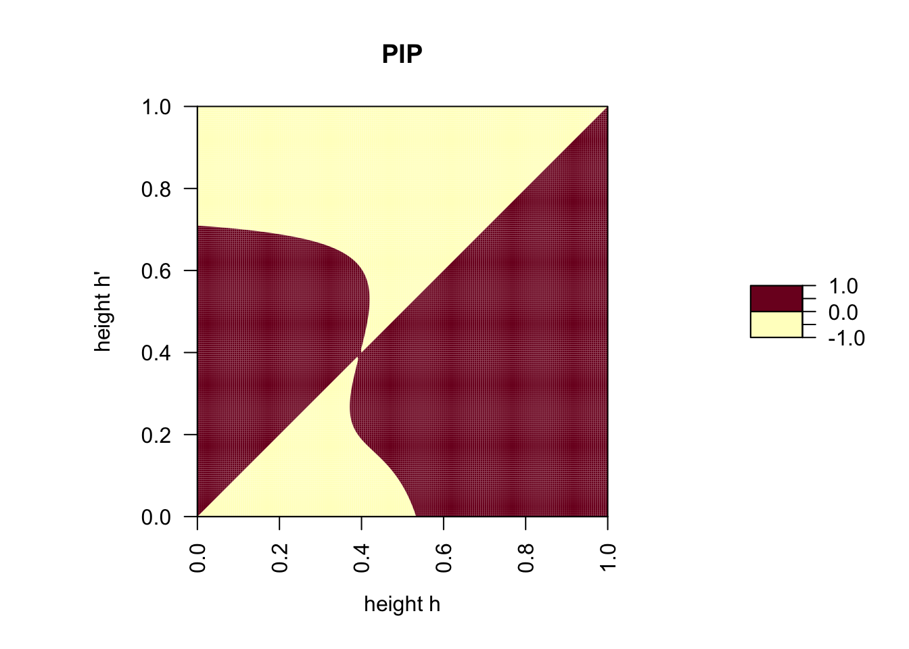

Evolution in the modified model
Let us modify one assumption in our model. Above we assumed that the minimum and maximum amount of photosyntesis, \(P_L\) and \(P_H\), are fixed parameters. Hanna Kokko suggests that the values of \(P_L\) and \(P_H\) are determined by leaf structure. Indeed, some plant species have rather thick, leathery leaves that are protected by a very thick cuticula while other plants have rather thin leaves that are hardly protected by a cuticula. This plant trait is generally related to the amount of sun light a plant is exposed to. Leave thickness is an adaptation against water loss and plants exposed to more intense sun light have thicker leaves, which decreases their photosytetic efficiency. It therefore seems reasonable to assume that plants that are shaded by other plants have thiner leaves that can photosythesize more efficiently and therefore have a higher value for \(P_L\). Let us implement this idea by making \(P_L\) a function of the degree of shading from a competing plant. More specifically, we will assume that \(P_L\) of a plant with strategy \(h'\) increases with increasing height difference \(h-h'\). A function for P_L(h’, h) that depends on h’-h and has the desired porperties is the following one:
P.L.flex <- function(h.m, h.r) {
P.L.mean + P.L.var*(1 / (1 + exp(gamma*(h.m - h.r))) - 0.5)
}
# the parameter P.L.mean gives P.L when h'=h
P.L.mean <- 0.25
# next the parameter determining the maximum difference in P.L between
# completely shaded and maximally sun exposed
P.L.var <- 0.5
# finally the parameter determining how fast P.L increases with increased
# shading from a competitor
gamma <- 10
curve(P.L.flex(x, h.r = 0.5), from = 0, to = 1, xlab = expression("height "* h[1]), ylab = expression("minimum photosynthesis, " * P[L](h[1], h[2] * "=0.5")))
Now we can plot how the fact that \(P.L\) depends on the plant heights \(h'\) and \(h\) affects the shape of the function \(g(h_1, h_2)\).
g.2 <- function(h.m, h.r) { # this a new function for g(h', h) that incorporates our function for P.L
P.L.flex(h.m, h.r) + (P.H - P.L.flex(h.m, h.r))/(1 + exp(-beta*(h.m - h.r)))
}
beta <- 5 # how fast does g change
P.H <- 1 # maximum photosythesis (identical in both versions of the model)
g <- function(h.m, h.r) { # the old function g(h', h) for comparison
P.L + (P.H - P.L)/(1 + exp(-beta*(h.m - h.r)))
}
P.L <- 0.25 # parameter determing the mimum photosynthesis in model with fixed P.L,
# here chosen to be equal to P.L.mean <- 0.25 for comparison
curve(g.2(x, h.r = 0.5), from = 0, to = 1, xlab = expression("plant height, h'"), ylim = c(0,1), ylab = expression("photosythesis/leaf, g(h', h = 0.5)"), col = "blue")
curve(g(x, h.r = 0.5), from = 0, to = 1, col = "orange", add = TRUE)
legend("topleft", legend = c(expression(P[L] * " fixed "),
expression(P[L] * " variable ")), lty =1, col = c("blue", "orange"))
We are interested in how our new assumption affect the PIP and whether we find heights h’ and h that are able to coexist with each other. To this end, we repeat the same steps as on the previous side. First, we produce the PIP.
f <- function(h) { # same function f(h) as before
1 - h^alpha
}
alpha <- 3 # same parameter value as before
w.2 <- function(h.m, h.r) { # payoff function now based on flexible P.L
f(h.m) * g.2(h.m, h.r)
}
s <- function(h.m, h.r) { # invasion fitness
w.2(h.m, h.r) - w.2(h.r, h.r)
}
PIP <- outer(seq(0, 1, 0.005), seq(0, 1, 0.005), s)
par(pty="s")
filled.contour(t(PIP), levels = c(-1, 0, 1), las = 2, main = "PIP",
xlab = expression("height h"),
ylab = expression("height h'"))
Next, the mirror image of the PIP.
s.flipped.roles <- function(h.m, h.r) {
w.2(h.r, h.m) - w.2(h.m, h.m)
}
PIP.mirrored <- outer(seq(0, 1, 0.005), seq(0, 1, 0.005), s.flipped.roles)
par(pty="s")
filled.contour(t(PIP.mirrored), levels = c(-1, 0, 1), las = 2, main = "PIP.mirrored",
xlab = expression("height h"),
ylab = expression("height h'"))And finally the PIP and it mirror image superimposed.
par(pty="s")
TEP <- ifelse(PIP > 0 & PIP.mirrored > 0, 1, ifelse(PIP < 0 & PIP.mirrored < 0, -1, 0))
filled.contour(t(TEP), levels = c(-1.5, -0.5, 0.5, 1.5), col = c("red", "blue", "green"),
plot.title={
title(main = "PIP and PIP.mirrored superimposed")
title(xlab=expression("height h"))
title(ylab=expression("height h'"))
abline(0, 1, lwd = 1)
})Something very interesting has happend! The green region in the last plot shows combinations of plant heights h’ and h that each have a positive invasion fitness when rare. Thus, these different plants (plant species) are able to coexist with each other in a stable polymorphism. In fact, the PIP above is very special as it shows a so-called evolutionary branching point where one population can split into two in a process of gradual evolution. Models with such branching point play an important role in speciation research.